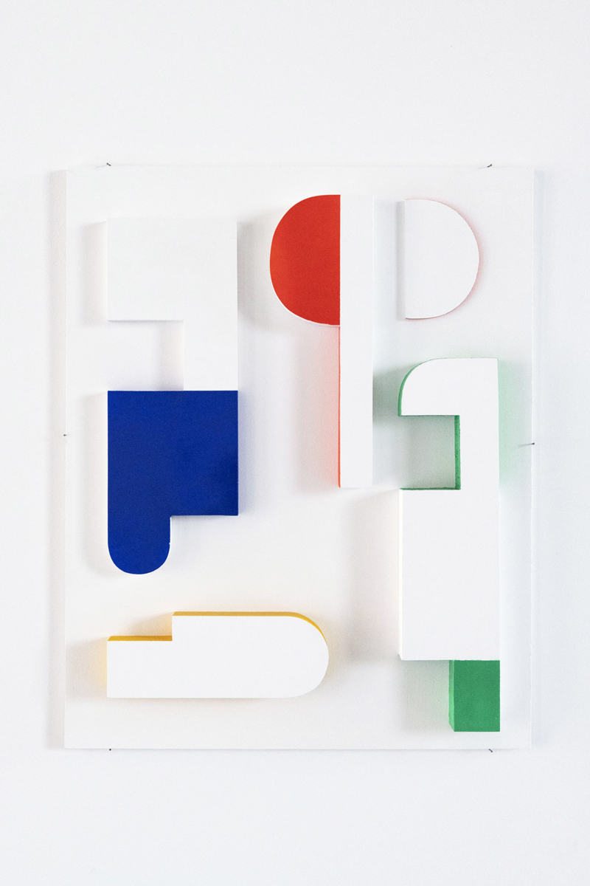

La T.E.U.F
Typographie pour un Environnement Utopique de la Fête
2022
Projet de DNSEP mention Média
« La T.E.U.F » propose un vocabulaire graphique dédié au mouvement des free-partys. Dessiné par la contreforme du caractère typographique, cet alphabet évolue en fonction du lieu de rendez-vous et de son accessibilité, du matériel, du temps d'installation nécessaire et du mode de communication de l'évènement.
Photographies : © Sandrine Binoux




↑